<title>Бібліотека проти зразка</title>
<meta name="claude:viewport-fit-sides" content="cover">
<link rel="preconnect" href="https://fonts.googleapis.com">
<link rel="preconnect" href="https://fonts.gstatic.com" crossorigin>
<link rel="stylesheet" href="https://fonts.googleapis.com/css2?family=Onest:wght@400;500;700&family=Unbounded:wght@700&display=swap">
<style>
/* One column of pairs: what the approved target draws, then what the library draws, with one line on the difference.
   Single dark look on purpose: the game's own palette (ink purple, mint, coral). */
:root {
  --bg: #1a1629;
  --panel: #2a2540;
  --line: #4a4170;
  --fg: #ece8f7;
  --dim: #a39dbd;
  --mint: #6ff2b4;
  --coral: #ff5c6c;
  --display: "Unbounded", "Arial Black", system-ui, sans-serif;
  --text: "Onest", "Segoe UI", system-ui, sans-serif;
  color-scheme: dark;
}
html { background: var(--bg); }
body {
  background: var(--bg); color: var(--fg); font: 500 16px/1.5 var(--text);
  padding-left: max(16px, env(safe-area-inset-left, 0px));
  padding-right: max(16px, env(safe-area-inset-right, 0px));
  padding-block: 28px 56px;
}
main { max-width: 980px; margin: 0 auto; display: grid; gap: 28px; }
h1 { font: 700 clamp(26px, 6vw, 40px)/1.15 var(--display); margin: 0; text-wrap: balance; }
h2 { font: 700 19px/1.3 var(--display); margin: 0; text-wrap: balance; }
p { margin: 0; max-width: 68ch; }
.lead { color: var(--dim); }
.lead a, a { color: var(--mint); }
.sum { display: grid; gap: 12px; grid-template-columns: repeat(auto-fit, minmax(260px, 1fr)); }
.box { background: var(--panel); border: 2px solid var(--line); border-radius: 12px; padding: 16px; display: grid; gap: 8px; align-content: start; }
.box h3 { font: 700 12px/1.2 var(--display); letter-spacing: 1.5px; text-transform: uppercase; margin: 0; color: var(--dim); }
.box.ok h3 { color: var(--mint); }
.box.no h3 { color: var(--coral); }
.box ul { margin: 0; padding-left: 18px; display: grid; gap: 4px; }
.item { border-top: 2px solid var(--line); padding-top: 22px; display: grid; gap: 12px; }
.head { display: flex; gap: 12px; align-items: baseline; flex-wrap: wrap; }
.num { font: 700 13px/1 var(--display); color: var(--bg); background: var(--mint); border-radius: 6px; padding: 5px 8px; }
.tag { font: 700 11px/1 var(--display); letter-spacing: 1px; text-transform: uppercase; border: 2px solid var(--coral); color: var(--coral); border-radius: 6px; padding: 4px 7px; }
.tag.miss { border-color: var(--dim); color: var(--dim); }
.pair { display: grid; gap: 12px; grid-template-columns: repeat(2, minmax(0, 1fr)); align-items: start; }
.pair.one { grid-template-columns: minmax(0, 1fr); }
figure { margin: 0; display: grid; gap: 6px; min-width: 0; }
figcaption { font: 700 11px/1.2 var(--display); letter-spacing: 1.5px; text-transform: uppercase; color: var(--dim); }
figure.t figcaption { color: var(--mint); }
figure img { width: 100%; height: auto; display: block; border-radius: 8px; border: 2px solid var(--line); background: #000; }
.diff { display: grid; gap: 4px; }
.diff b { color: var(--mint); font-weight: 700; }
.diff i { font-style: normal; color: var(--coral); font-weight: 700; }
.note { color: var(--dim); font-size: 14px; }
@media (max-width: 640px) { .pair { grid-template-columns: minmax(0, 1fr); } }
</style>

<main>
  <header style="display:grid;gap:10px">
    <h1>Бібліотека проти зразка</h1>
    <p class="lead">Ліворуч — <a href="https://claude.ai/artifact/Aj1NJ2AWp2RSK1DLNifc5Q">зразок, про який ви сказали «вигляд ок»</a>. Праворуч — та сама річ у <a href="https://claude.ai/artifact/LdShtvgiHr4U7UVTgKjZpm">бібліотеці компонентів</a> (ui-2.0.2), з якої зроблено креслення екранів. Кадри зняв з обох сторінок як є. Масштаб у парі різний: дивіться на будову, а не на розмір.</p>
  </header>

  <section class="sum">
    <div class="box ok">
      <h3>Збігається</h3>
      <ul>
        <li>Палітра: чорнильний фіолет, мʼята, корал.</li>
        <li>Шрифти: Unbounded на числах і заголовках, Onest на тексті.</li>
        <li>Кольори кнопок і сегменти здоровʼя й витривалості.</li>
        <li>Гучні моменти: смуги ролі й кінців, плитка копів, коралова рамка.</li>
      </ul>
    </div>
    <div class="box no">
      <h3>Не схоже — 9 місць</h3>
      <ul>
        <li>Немає стилю дрібних заголовків плиток (ГРАВЦІ, КОСТЮМ, РУКА).</li>
        <li>Вкладки, слоти, рядки налаштувань, степер — інша будова.</li>
        <li>Верстат і кімната мертвих — гучніші й більші, ніж у зразку.</li>
      </ul>
    </div>
  </section>

  <article class="item">
    <div class="head"><span class="num">1</span><h2>Вкладки меню</h2><span class="tag">інакше</span></div>
    <div class="diff"><p><b>Зразок:</b> текстові вкладки в один рядок угорі, активна має мʼятну риску знизу; праворуч маленька клавіша Esc.</p><p><i>Бібліотека:</i> вкладки — залиті плитки; на кресленні меню вони стоять стовпчиком зліва.</p></div>
    <div class="pair"><figure class="t"><figcaption>Зразок</figcaption>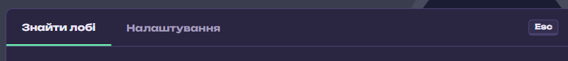</figure><figure><figcaption>Бібліотека</figcaption>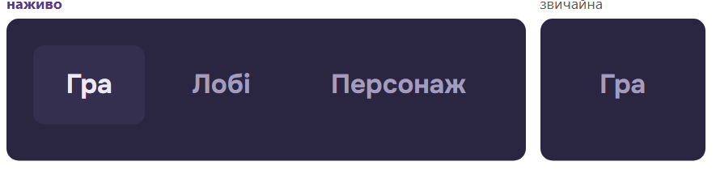</figure></div>
  </article>

  <article class="item">
    <div class="head"><span class="num">2</span><h2>Заголовки плиток і бирки</h2><span class="tag miss">немає в бібліотеці</span></div>
    <div class="diff"><p><b>Зразок:</b> над вмістом плитки дрібний заголовок великими літерами з розрядкою: ГРАВЦІ, КОСТЮМ, РУКА, ПОЯС, ЛОБІ ПОРУЧ, КОД. Бирка «ЛЮДИНА» теж дрібна й великими літерами.</p><p><i>Бібліотека:</i> такого стилю немає взагалі; бирка «Людина» звичайними літерами й більша.</p></div>
    <div class="pair"><figure class="t"><figcaption>Зразок</figcaption>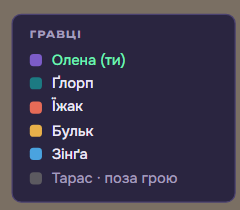</figure><figure><figcaption>Бібліотека</figcaption>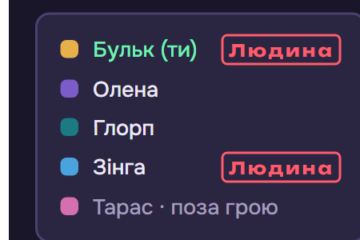</figure></div>
  </article>

  <article class="item">
    <div class="head"><span class="num">3</span><h2>Плитка костюма</h2><span class="tag">інакше</span></div>
    <div class="diff"><p><b>Зразок:</b> заголовок КОСТЮМ, дрібні тихі підписи, плитка компактна.</p><p><i>Бібліотека:</i> без заголовка, підписи крупніші, плитка ширша.</p></div>
    <div class="pair"><figure class="t"><figcaption>Зразок</figcaption>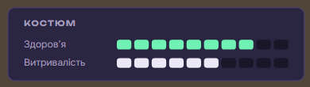</figure><figure><figcaption>Бібліотека</figcaption>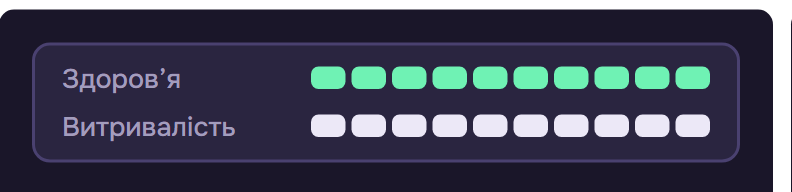</figure></div>
  </article>

  <article class="item">
    <div class="head"><span class="num">4</span><h2>Час і гнів</h2><span class="tag">інакше</span></div>
    <div class="diff"><p><b>Зразок:</b> між часом і гнівом тонка вертикальна риска, над смужкою підпис «Гнів сусідів».</p><p><i>Бібліотека:</i> ні риски, ні підпису; смужка йде одразу за часом.</p></div>
    <div class="pair"><figure class="t"><figcaption>Зразок</figcaption>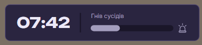</figure><figure><figcaption>Бібліотека</figcaption>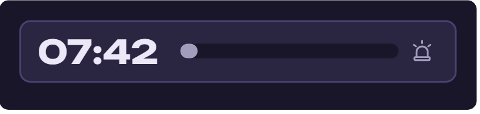</figure></div>
  </article>

  <article class="item">
    <div class="head"><span class="num">5</span><h2>Слоти руки й пояса</h2><span class="tag">інакше</span></div>
    <div class="diff"><p><b>Зразок:</b> угорі підпис РУКА або ПОЯС, у центрі невеликий яскравий значок, під ним назва — усе всередині плитки.</p><p><i>Бібліотека:</i> підпису немає, значок величезний і блідий на весь слот, назва налазить на нижній край.</p></div>
    <div class="pair"><figure class="t"><figcaption>Зразок</figcaption>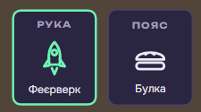</figure><figure><figcaption>Бібліотека</figcaption>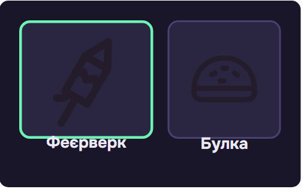</figure></div>
  </article>

  <article class="item">
    <div class="head"><span class="num">6</span><h2>Рядки налаштувань</h2><span class="tag">інакше</span></div>
    <div class="diff"><p><b>Зразок:</b> зліва список розділів, праворуч рядки, розділені тонкою лінією: повзунок із білою ручкою і числом, випадний список.</p><p><i>Бібліотека:</i> кожен рядок — окрема плитка з великим текстом, значення просто числом, без повзунка.</p></div>
    <div class="pair"><figure class="t"><figcaption>Зразок</figcaption>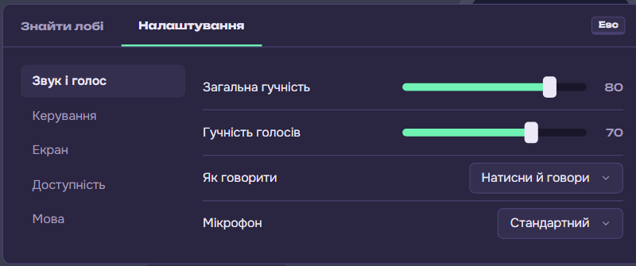</figure><figure><figcaption>Бібліотека</figcaption>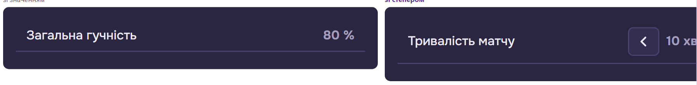</figure></div>
  </article>

  <article class="item">
    <div class="head"><span class="num">7</span><h2>Степер і вибір</h2><span class="tag">інакше</span></div>
    <div class="diff"><p><b>Зразок:</b> квадратні кнопки «−» і «+», між ними значення; поріг — дві злиті половинки «50 | 100».</p><p><i>Бібліотека:</i> стрілки «‹ ›» замість «− +».</p></div>
    <div class="pair"><figure class="t"><figcaption>Зразок</figcaption>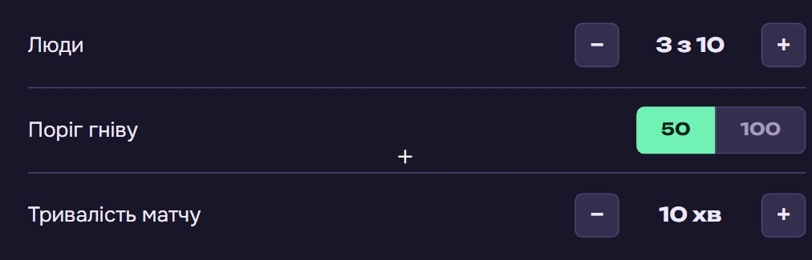</figure><figure><figcaption>Бібліотека</figcaption>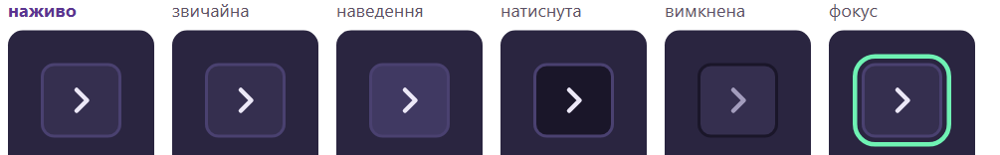</figure></div>
  </article>

  <article class="item">
    <div class="head"><span class="num">8</span><h2>Мутаційний верстат</h2><span class="tag">гучніше</span></div>
    <div class="diff"><p><b>Зразок:</b> тихий екран: невеликий заголовок, у картках кнопка «Мутувати» обведена, залита лише в картці під прицілом.</p><p><i>Бібліотека:</i> величезний заголовок, усі кнопки залиті зеленим.</p></div>
    <div class="pair"><figure class="t"><figcaption>Зразок</figcaption>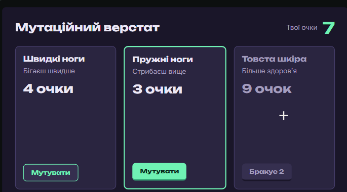</figure><figure><figcaption>Бібліотека</figcaption>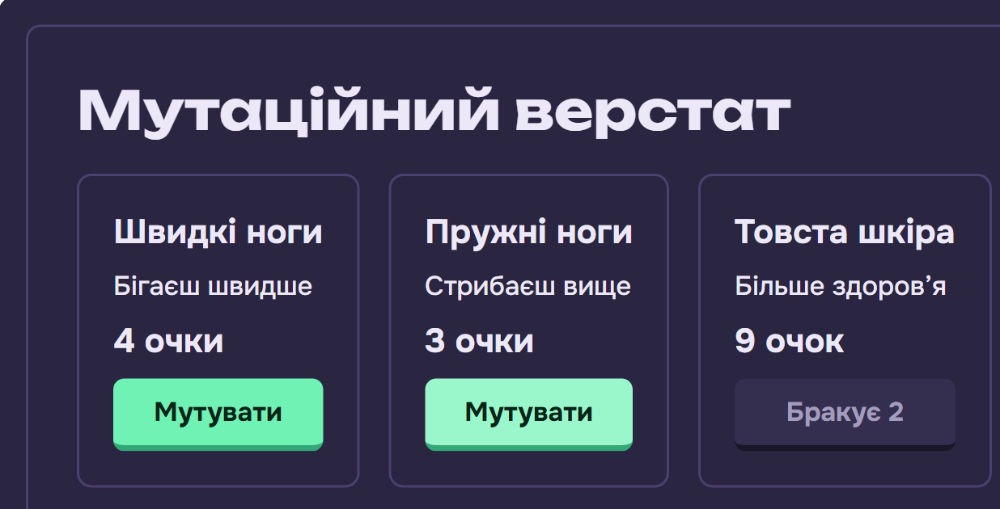</figure></div>
  </article>

  <article class="item">
    <div class="head"><span class="num">9</span><h2>Кімната мертвих</h2><span class="tag">гучніше</span></div>
    <div class="diff"><p><b>Зразок:</b> назва в маленькій плитці вгорі, відлік у тихій плитці посередині, більше нічого.</p><p><i>Бібліотека:</i> назва великим заголовком на окремій плашці, під відліком смужка.</p></div>
    <div class="pair"><figure class="t"><figcaption>Зразок</figcaption>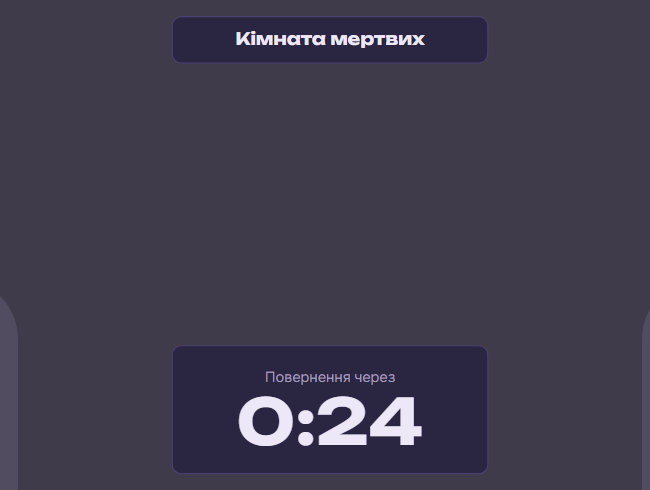</figure><figure><figcaption>Бібліотека</figcaption>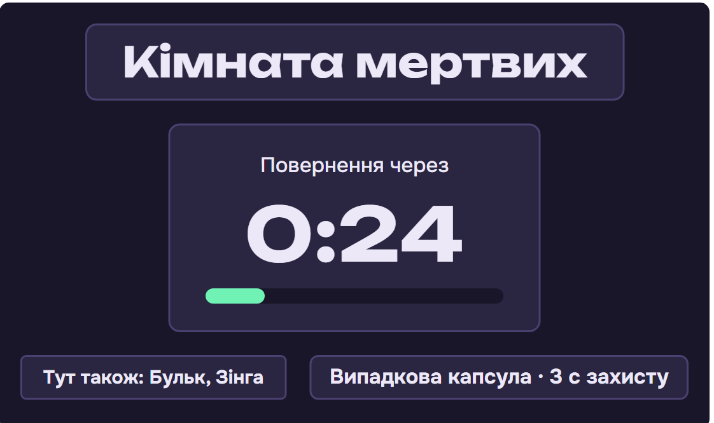</figure></div>
  </article>

  <article class="item">
    <div class="head"><h2>І ще не бібліотека, а екрани</h2></div>
    <div class="diff"><p>У зразку налаштування матчу — це екран на пульті корабля, нагорі «Готові 4 з 6» із сегментами, унизу ліворуч «Готовність: так». На кресленнях замість цього вкладка «Лобі» в меню Esc із картками пресетів. Те саме з «Знайти лобі»: у зразку — лобі поруч, код і твій код, на кресленнях — старий список головного меню. Це перероблю на кроці з екранами, після бібліотеки.</p></div>
    <div class="pair one"><figure class="t"><figcaption>Зразок</figcaption>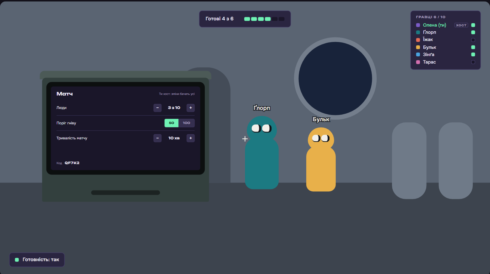</figure></div>
    <div class="pair one"><figure class="t"><figcaption>Зразок</figcaption>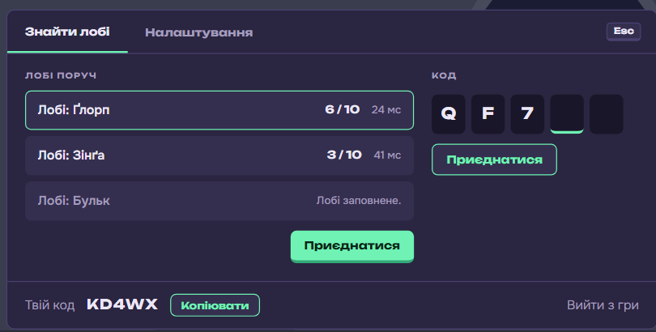</figure></div>
  </article>

  <p class="note">Кадри: pages/suit-final (зразок) і pages/components (бібліотека ui-2.0.2), зняті в Edge 22.10. Джерело сторінки: pages/library-check у prime-game-ui.</p>
</main>
